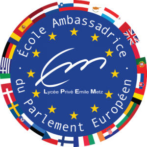
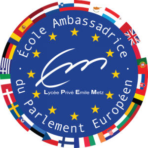

Ovo je prva stranica
Naša priča,
Na starijem kraju Milenijuma još uvek se ne sećamo vremena pre nego što smo imali internet. Naša najranija sećanja, poput mnogih koje ovo čitaju, su NES ZELDA, Mario, FFI, Sonic i još mnogo toga. Kako smo rasli, tako su nastale i naše igre. Do 10 godina natjecali smo se sa Starcraft-om, trčeći Baala cijelu noć u Diablo-u 2 i borili se sa Orcima u originalnim Varcraftovima.
Oko 12. godine, naš život se zauvek promenio kada se Džon preselio iz Nju Džersija na Floridu i upoznao Sethu u letnjem kampu crkve. Prvog dana 7. razreda dva nova prijatelja našla su se uglavnom s istim rasporedom. Naše prijateljstvo se ojačalo i igrale su se igre. Otprilike u to vreme izašao je Halo i počeli smo da organizujemo igre (pre kbok live-a) i takmičili se u LAN događajima širom Floride. Konkurentski Halo postao je naša opsesija i postavio bi ton tokom mnogih narednih godina.
Bljesnite napred skoro 20 godina kasnije i dalje smo jaki. Naša opsesija o igrama obuhvata VOV, DoTA, LoL, CoD, Overvatch, Rocket League, PUBG, Destini, Elder Scrolls, Mass Effect, Fallout, Battlefield, Gears of Var, i još mnogo toga. Nakon što smo diplomirali na USF-u i Clemsonu, došlo je vreme da izgradimo sopstvenu budućnost. Ne zanimajući korporativno radno okruženje ili ne želeći da prestanemo da igramo igrice, krenuli smo sami i započeli smo sa izgradnjom kompanija za igre.
Uz sponzorstvo našeg prvog tima za izvoz, vatra je bila upaljena i nikad se nismo osvrnuli na nju. Godine 2011, zahvaljujući širokoj zavisnosti od Vorld of Varcraft i takmičarskoj areni, postali smo poznati u zajednici. Mnogo ljudi bi pitalo za savjet kako bolje u svojim igrama i rodila se ideja. Nakon nekoliko nedelja istraživanja, snimanja i stvaranja, Vorld of Varcraft PVP tutorial i servis za obuku u esportu pod nazivom NektLevelPVP bio je otvoren za poslovanje. Pomoću ove kompanije naučili smo kako da stvorimo organizaciju za obrazovanje igara koja je poboljšala igru za mnoge pojedince, istovremeno pomažući rast konkurentnog izvoza. Pomoglo je u zapošljavanju gejmera, streama, timova i pomoglo igračima u igri. Uz sponzorstvo našeg prvog tima za izvoz, vatra je zapaljena i nikad se nismo osvrnuli.
U 2013. godini pokrenuli smo drugu uspešnu kompaniju Apek hosting. Kroz naporan rad i malo sreće, udružili smo se s džogerom u kreiranju Modpacka, TechnicPack, i postali jedna od najvećih i najpoznatijih hosting kompanija u Minecraft-u. Tokom narednih 5 godina Apek je postao međunarodna kompanija za posluživanje igara koja zapošljava desetak ljudi i pomaže više od 50k igrača iz 70 zemalja da igraju Minecraft sa svojim prijateljima. Usredsređenost na besplatne usluge za biblioteke i škole pomogla nam je da napredujemo u osnovnim vrednostima igara, dok nas je kontinuirano sponzorstvo Ioutubers-a i Modpack-ovih stvaralaca dovelo dublje u zajednicu. Naša prva godišnja stipendija Minecraft pomogla je igračima da se opet fokusiraju na obrazovanje i ojačaju naše osnovne vrednosti.
Onda je 2015. godine, nakon godina rada i igranja na mreži, ogromna tačka bola postala bol u leđima. Ergonomske stolice za igranje postojale su, ali konsenzus konkurentnog igranja i streamova bio je da su proizvodi na tržištu ili lošeg kvaliteta, ili previše skupi. Osjetivši poznati osjećaj mogućnosti, započeli smo istraživanje i nakon godinu dana testiranja, prototipa i planiranja bili smo zadovoljni prvim sjedištem. U jesen 2015. godine započeli smo proizvodnju i lansirali OPSEAT sa ciljem da postanemo brend usmeren na izvoz koji nudi najkvalitetniji nameštaj i pribor za igranje po povoljnoj ceni. Veliki procenat prihoda nastavljamo da vraćamo stremerima, profesionalcima u izvozu, kreatorima sadržaja i što je najvažnije ... igramo srcem.
Hvala vam što ste odvojili vreme da pročitate našu priču. Nadamo se da ćete se odlučiti pridružiti nam na ovom putu, kako zajedno sa industrijom izvoznika rastemo u kompaniju na koju se svi možemo ponositi.